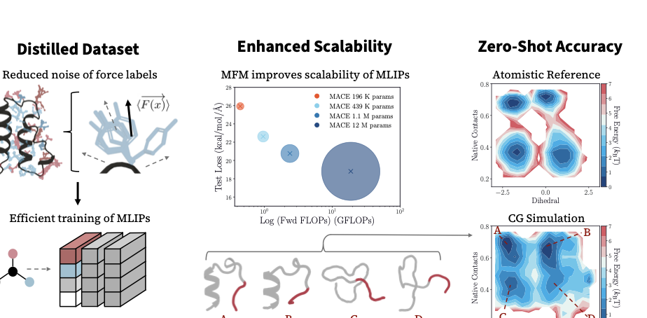

50x
fewer training samples needed by mean force matching
A data-efficient route to thermodynamically consistent, transferable protein coarse-grained models.
We compare force matching, score matching, and mean force matching for training neural coarse-grained protein potentials. Mean force matching substantially lowers noise in the objective, enabling better zero-shot generalization with far less data and compute.

| Model | MFM | MFM 100K | FM | SM |
|---|---|---|---|---|
| SchNet | 32.53 | 31.31 | 39.83 | 47.34 |
| MACE | 26.20 | 22.62 | 34.38 | 38.78 |
| eSEN | 19.05 | 14.89 | 24.28 | 25.55 |
Held-out mean-force MSE across 50 unseen CATH domains (kcal/mol A)^2. Lower is better.
On trp-cage, models trained with force matching and score matching fail to stabilize the folded basin and confuse metastable states. In contrast, MFM-trained MACE and eSEN recover folded, misfolded, and unfolded basins with much closer agreement to atomistic references.
Beyond single chains, the transferable model generalizes to the ParD-ParE complex, preserving structural stability and reproducing low-error backbone dihedral behavior in structured regions.
Mean force matching offers a practical scaling path for transferable coarse-grained protein potentials: lower-variance supervision, stronger thermodynamic fidelity, and substantially reduced compute requirements.